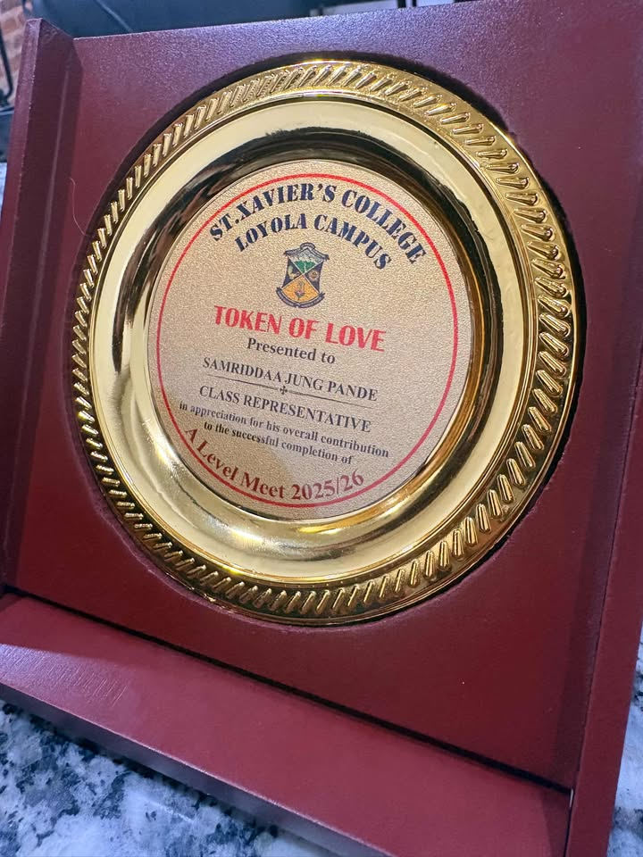
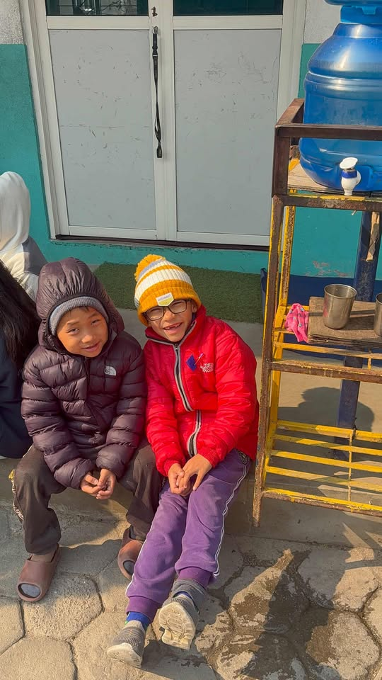

Dedicated
"Strategic student leader and academic researcher dedicated to community development and technological logic."
Former Head Boy, 7 MUN Awards, and Competitive Debate championships.
170+ hours of service via Orchid Garden Nepal and the PIE Initiative.
Advanced study in CS and Physics; focused on analytical data synthesis.
Vocalist and performance artist bridging community and creativity.
• Head Boy | Millsberry School (Grade 10): Directed student government operations and facilitated communication between 500+ students and senior administration.
• Model United Nations: Recognized with 6 Outstanding Delegate awards and 1 Special Mention; specialized in conflict resolution and strategic policy drafting.
• Debate: Two-time tournament winner with high-level proficiency in rhetorical strategy and spontaneous rebuttal.
• Class Representative: Currently managing cohort coordination at St. Xavier's College.
• Partnership in Education (PIE): Dedicated 90 hours to a student-led initiative teaching marginalized youth in Thapathali.
• Orchid Garden Nepal: 80 hours providing educational and nutritional support for the children of day laborers.
• RIC Sindhupalchowk: Served as Head Patrolling Officer; spearheaded local workshops and community infrastructure restoration projects.
• Core Disciplines: Pursuing AS Levels in Computer Science, Mathematics, Physics, Chemistry, and EGP at St. Xavier's College.
• Technical Proficiency: Foundational logic in Python and Pseudocode; experienced in structured problem-solving and algorithmic design.
• Research Paper: Authored a formal research paper analyzing socioeconomic variables within the Nepalese framework.
• Performance Art: Specialized vocalist focusing on contemporary arrangements. Active performer during the Rural Immersion Camp outreach programs.
• Digital Media: Managing a curated YouTube archive for vocal performances and creative explorations.